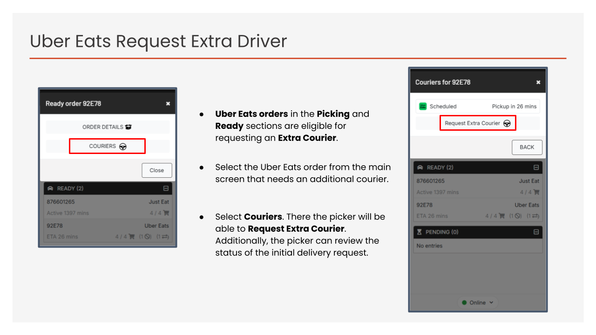
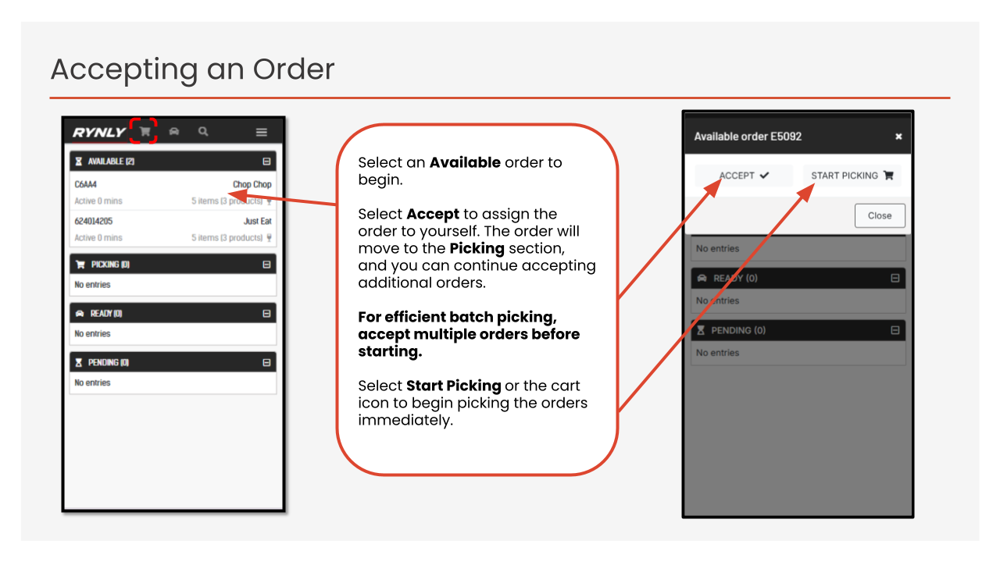
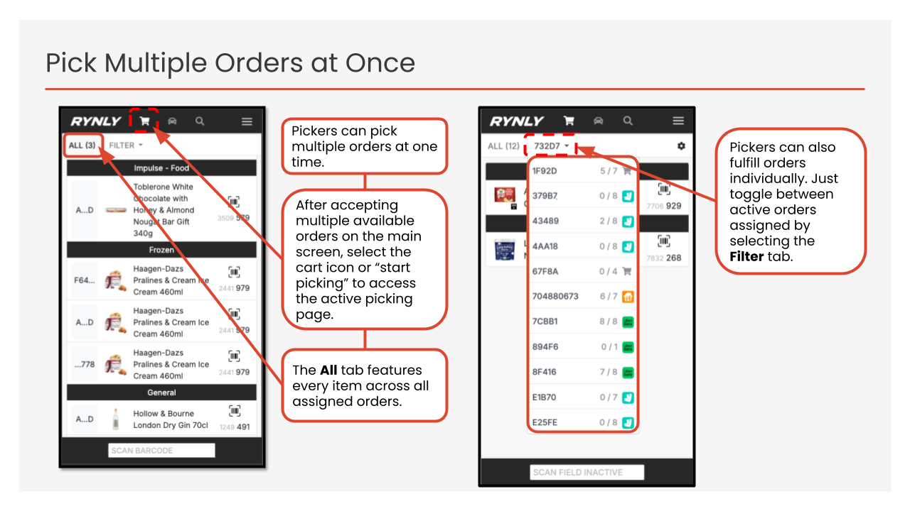
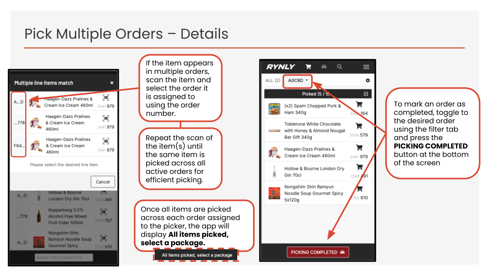
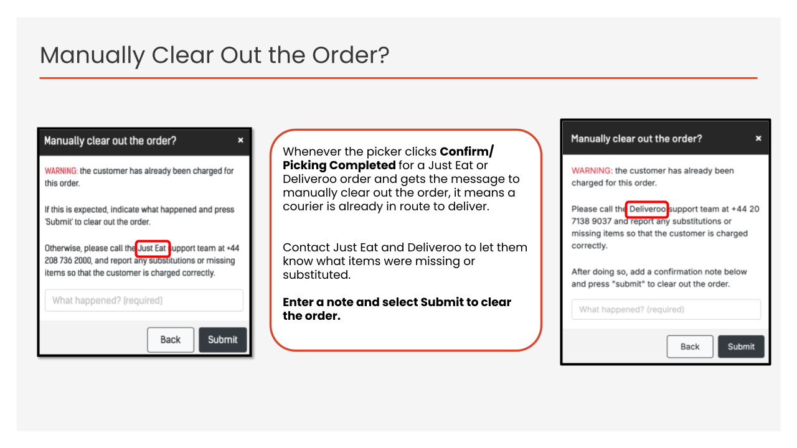
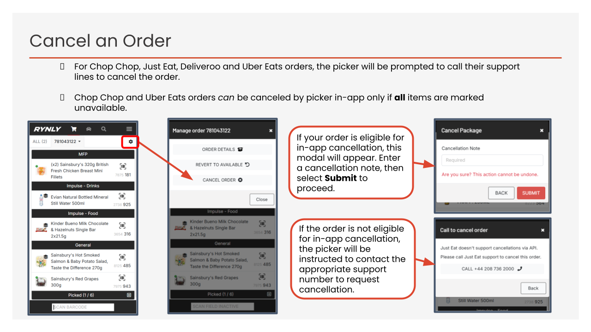
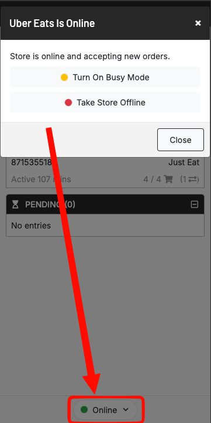
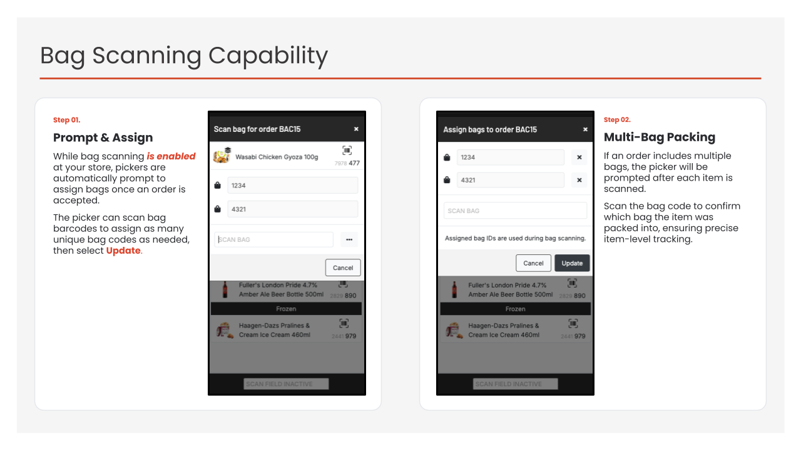
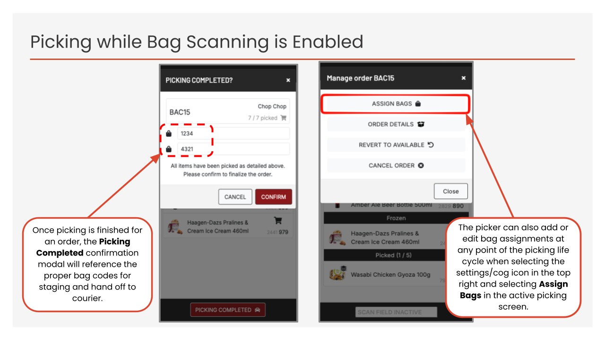
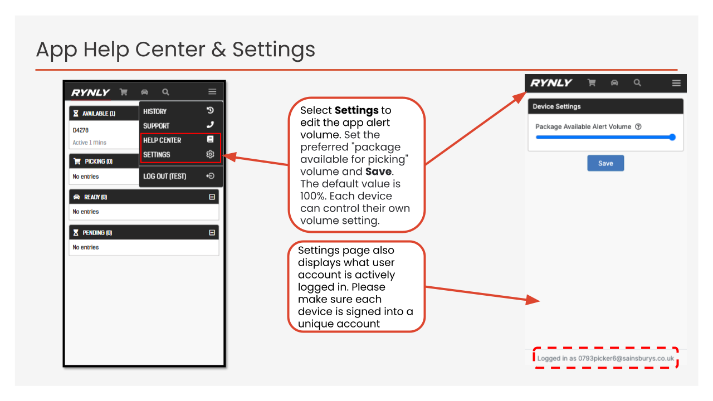

Help Centre
Select a guide:
Frequently Asked Questions:
1. How to identify an order? ⌄
The image below shows how to identify what type of order has been placed by a customer from the Rynly picking app home page.
It is important to note which on-demand channel an order has come from, for example Just Eat or Uber Eats, as each channel has its own compatibilities with substitutes, request extra driver and other workflows.

2. How to keep alerts ringing for new orders? ⌄
Please follow the troubleshooting steps below to ensure alerts are ringing on devices:
- Volume: check the volume on the handset and in the app, and ensure both are set to maximum.
- Keep the app active: the Rynly app must remain open or running in the background at all times.
- Do not force close: users should not swipe up on the app, as this fully closes the application and prevents notifications from arriving.
- Notification modal: if a device is correctly configured to receive alerts, the "Rynly Hub Alerts Enabled" modal will be visible on the sleep screen and will remain visible persistently, as shown below.

3. How to request an extra driver for large orders? ⌄
Requesting an extra driver works differently for each channel.
- Just Eat: These orders will automatically call out an extra driver for large orders, Just Eat will call to inform the store.
If no extra driver shows up for the order, please call Just Eat on the line: 0208 736 2000
- Uber Eats: please follow the directions below.

- Chop Chop: A single courier is automatically requested for a Chop Chop order once both the order has been accepted and there are less than 4 items remaining to be picked. Once this happens it is possible to request an extra driver. Please follow the directions below as to how to manage this.

- Deliveroo: Please call the support line on: 020 3699 9977
4. How to pick multiple orders at the same time? (Batch Picking) ⌄
Please follow the slides below for efficient picking, making use of the batch picking functionality.



5. How to clear old hanging/stuck orders? ⌄
Please select the hanging order (with the correct picking account assigned to that order) and follow the instructions provided. Note, all items must be marked as picked or unavalible or substituted then mark the order as COMPLETED.
Most common hanging order type:

If it is not possible to remove the old order by following any of the above instructions, please contact support.
6. How can I cancel an order? ⌄
Please follow the steps below.

Support lines can be found in the below FAQ.
7. How can I close/stop on-demand orders at my store? ⌄
To close any on-demand services, please follow the guidance listed in the contingency procedure.
To access the contingency procedure information please go to this link on a seperate device:
https://jsainsbury.sharepoint.com/:w:/r/sites/DocCentre/Retail-Procedures/_layouts/15/Doc.aspx?sourcedoc=%7BE4D2EC1A-CB7B-45F6-A1DE-2C70D4E3E12A%7D&file=OnDemand_Contingency%20Procedure.docx&action=default&mobileredirect=true
If the contingency procedure cannot be found, please call the Just Eat, Chop Chop, and Deliveroo support lines individually.
Uber Eats orders on the Rynly app can be closed by selecting the tab shown below and "Take Store Offline".

If the store is running into network issues and cannot access this button, please call the Uber support line too.
NOTE: The Rynly support team cannot take a store offline from on-demand orders. Please follow the instructions above to do so.
8. How to contact support? ⌄
- Just Eat support: 0208 736 2000
- Uber Eats support: 0808 178 5518
- Deliveroo Support: 020 3699 9977
- Chop Chop support: 0333 070 3602
- Rynly support: 0808 189 5095 or support@rynly.com
Please note, for extra drivers and/or taking a store offline from on demand orders, please call the dedicated Chop Chop/Just Eat/Uber Eats/Deliveroo channel phone lines.
9. How to use pick scan pack scan for an order? ⌄
Please note, this question only applies to specific Sainsbury's stores with this functionality enabled.


10. How to locate the account signed in on each device? ⌄
